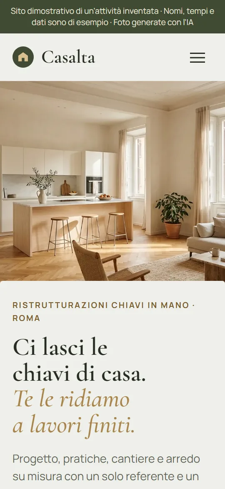
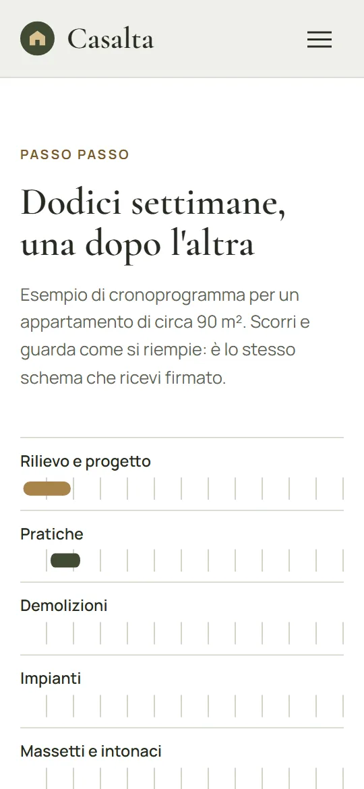
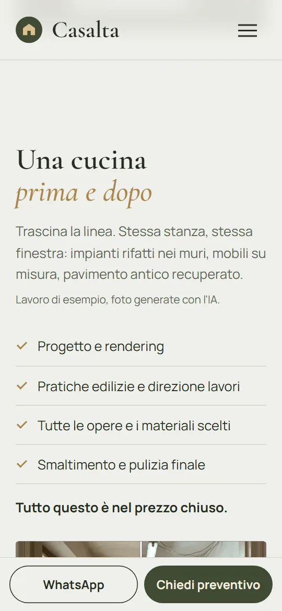
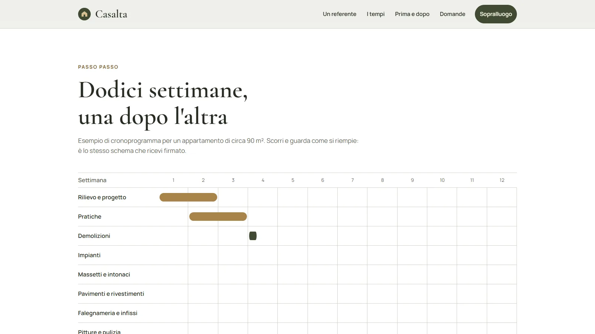
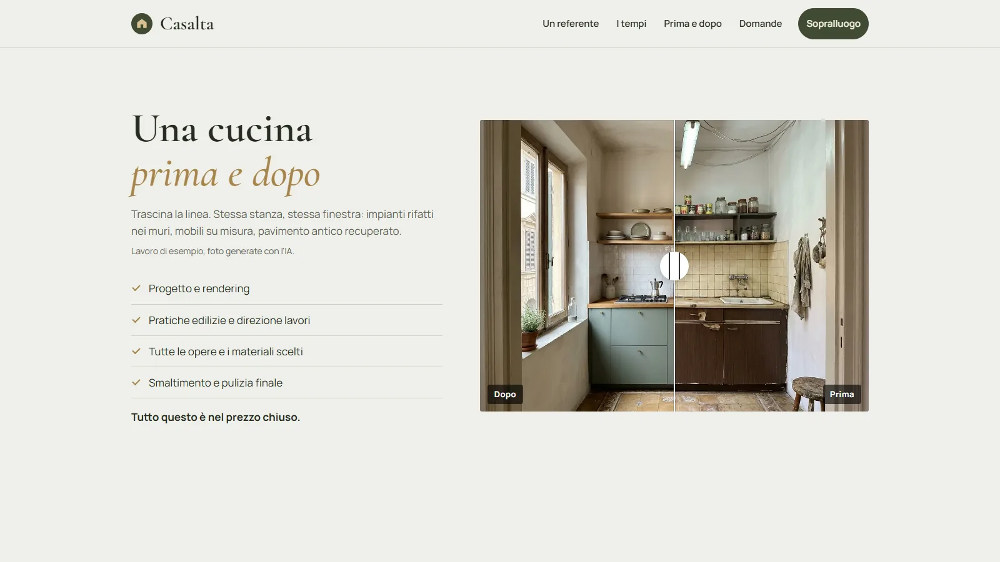

Sito aziendale · Ristrutturazioni chiavi in mano
Casalta
Sito per un'impresa di ristrutturazioni chiavi in mano a Roma: un solo referente al posto di sette, il cronoprogramma che si riempie settimana per settimana e il prima e dopo di una cucina.
Tipo · Sito per computer e telefonoFunzioni · cronoprogramma animato, confronto, prima e dopoStato · Demo online, attività inventata

Dal telefono
Passo passo
- Passo 1Apertura da rivistaSoggiorno finito e promessa semplice: chiavi lasciate, chiavi restituite.

- Passo 2Dodici settimaneIl cronoprogramma si riempie mentre scorri e dice cosa succede ogni settimana.

- Passo 3Prima e dopoStessa cucina, stessa finestra, da confrontare con il dito.

Dal computer
Le altre schermate


Cosa fa
Le funzioni della demo
- CronoprogrammaNove fasi su dodici settimane, legate allo scorrimento.
- Un referenteConfronto tra chi chiamare da soli e con l'impresa.
- Prezzo chiusoCosa è compreso, scritto accanto al prima e dopo.
- Modulo con metri quadriControlla che sia un numero e prepara il messaggio.
È una demo, non un cliente. Casalta non esiste: nomi, prezzi e dati sono di esempio e le foto sono generate con l'IA. Il modulo non invia nulla: controlla i campi e apre WhatsApp o l'email con il messaggio pronto. I lavori per clienti veri li mostriamo in call, con il loro permesso.
Ti serve un sito così?
In call ti mostriamo come sarebbe per la tua impresa.